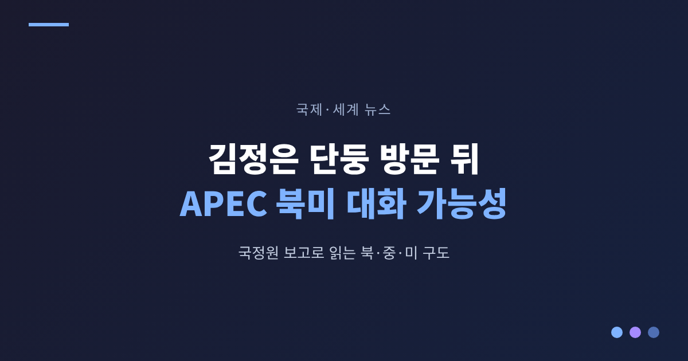
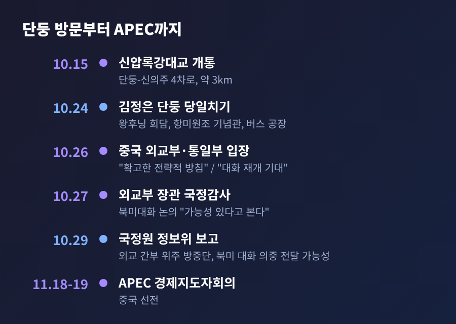
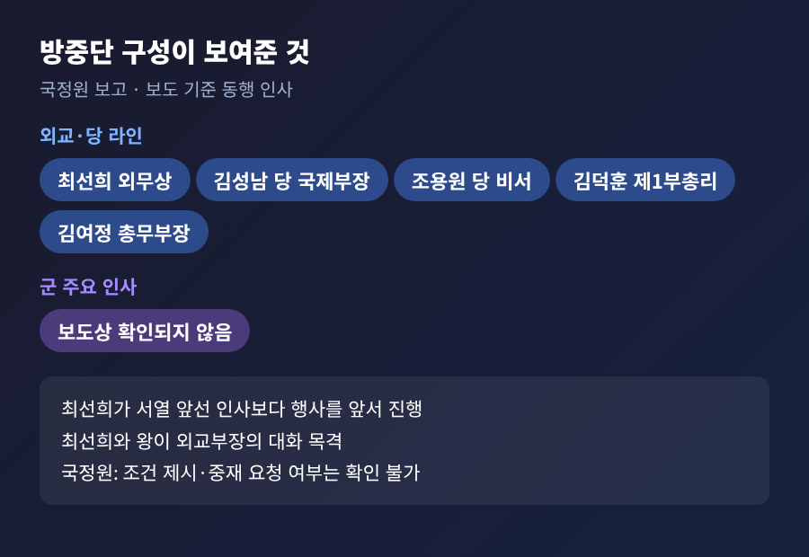
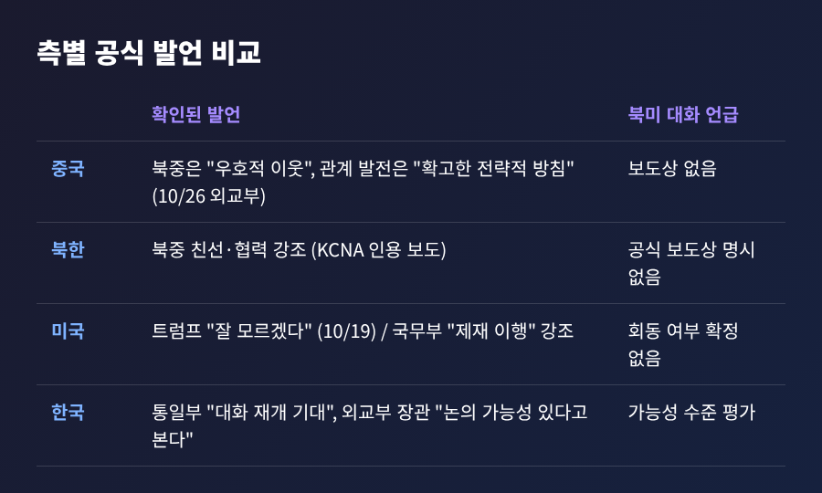
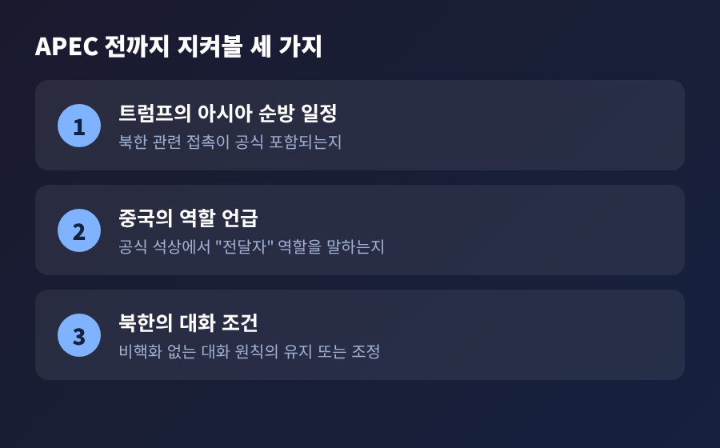

3줄 요약 - 10월 29일 국정원은 국회 정보위에서 김정은의 단둥 방문단이 군 인사 없이 외교 간부 위주였다는 점을 들어, 북미 대화 의중을 중국에 전했을 가능성이 있다고 보고했습니다. - 북미는 대화 조건에서 입장 차가 커 접점이 없으나, 11월 18~19일 중국 선전 APEC 전후로 국면이 바뀔 가능성은 열어두었습니다. - 다만 국정원도 조건 제시나 중재 요청 여부는 확인할 수 없다고 했고, 중국·북한의 공식 발표에는 북미 대화 언급이 없습니다.
이번 글에서는 국정원 보고를 중심으로 김정은 단둥 방문 이후의 북·중·미 구도를 정리해 보려 합니다. 방문 사실, 각국의 입장, 남은 변수를 차례로 짚겠습니다. 확인되지 않은 부분은 확인되지 않았다고 적겠습니다.
■ 무슨 일이 있었나: 10월 24일 단둥, 10월 29일 정보위
김정은 국무위원장은 10월 24일 중국 랴오닝성 단둥을 당일치기로 방문했습니다. 평양에서 신의주로 이동한 뒤 신압록강대교를 건넜습니다. 이 다리는 단둥과 신의주를 잇는 왕복 4차로, 약 3km 규모로 10월 15일에 공식 개통했습니다. 완공 이후 12년간 열리지 않았던 다리입니다.
김정은은 항미원조 기념관을 참관하고 헌화했습니다. 이후 왕후닝 전국정치협상회의 주석과 회담했고, 단둥의 버스 공장을 둘러본 뒤 그날 돌아갔습니다. 왕후닝은 중국 권력 서열 4위로 알려진 인물이며, 왕이 외교부장도 일정에 함께했습니다. 김정은의 중국 방문은 2025년 9월 베이징 전승절 행사 이후 약 1년 1개월 만이었습니다.
닷새 뒤인 29일, 국정원은 국회 정보위원회 국정감사에서 이 방문을 평가했습니다. 여야 간사인 윤건영 의원과 유영하 의원이 브리핑으로 내용을 전했습니다. 핵심 근거는 방중단의 구성이었습니다.

■ 왜 방중단 구성이 단서로 읽히는가
보도에 따르면 동행 인사는 조용원 당 비서, 최선희 외무상, 김성남 당 국제부장, 김덕훈 내각 제1부총리, 김여정 총무부장 등이었습니다. 군부 주요 인사는 보이지 않았습니다. 국정원은 이 점을 짚었습니다.
국정원이 든 정황은 더 있습니다. 최선희가 서열이 앞선 인사들보다 행사를 앞서 진행했고, 왕이 부장과 대화하는 모습도 목격되었다고 합니다. 국정원은 북한이 중국과 외교적으로 논의할 수 있는 주제가 북미 대화뿐이라고 분석했습니다.
예전엔 북중 정상 간 만남이 군사·경제 협력의 상징으로 읽혔습니다. 이번에는 외교 라인이 전면에 섰다는 점이 달랐습니다. 그래서 '북미 메시지'라는 해석이 힘을 얻었습니다.
다만 이것은 정황에 근거한 평가입니다. 국정원 스스로 김정은이 중국에 대화 조건을 제시했는지, 중재를 요청했는지는 확인할 수 없다고 했습니다. 전망에 대해서도 "그렇게 낙관적으로 보지는 않는다"고 밝혔습니다. 윤건영 의원은 이를 추가 확인이 필요하다는 뜻으로, 중립적으로 보자는 취지라고 설명했습니다.

■ 각자의 입장: 같은 사건, 다른 말
같은 방문을 두고 각측의 설명은 조금씩 다릅니다.
중국은 10월 26일 궈자쿤 외교부 대변인이 북중 관계를 "우호적 이웃"이라고 부르며, 관계의 유지와 발전은 당과 정부의 "확고한 전략적 방침"이라고 말했습니다. 방문이 초청인지 북한의 제안인지는 직접 답하지 않았고, 북미 대화에 대한 언급도 이 기사에는 나오지 않습니다. 왕후닝은 신압록강대교를 계기로 인적 왕래와 경제·무역 협력을 넓히겠다고 했습니다.
북한 측 공식 발언도 북중 친선과 협력에 무게가 실려 있었습니다. 코리아헤럴드는 양측 공식 보도 어디에도 북미 대화가 명시되지 않았다고 전했습니다.
미국은 두 갈래입니다. 트럼프 대통령은 10월 12일 김정은을 만날 가능성을 묻자 "만날 수도 있다"면서 사이가 좋다고 말했습니다. 그러나 19일에는 "잘 모르겠다. 누가 만남을 요청하는지 모르겠다"고 한발 물러섰습니다. 한편 국무부 대변인은 VOA 질의에 국경 간 교역이 제재 회피나 불법 무기 프로그램 지원으로 이어져서는 안 되며, 중국이 안보리 제재를 완전히 이행해야 한다고 답했습니다.
한국 정부는 신중합니다. 통일부는 26일 방문이 한반도 평화와 주변국 간 대화 재개에 건설적으로 기여하기를 기대한다고 밝혔고, 북미 조율 목적인지는 즉답하지 않았습니다. 조현 외교부 장관은 27일 국감에서 북중 간에 북미 대화가 논의되었을 "가능성이 있다고 본다"고 답하며, 중국이 방문을 사전에 알려주지는 않았다고 했습니다.

■ 배경: 북미 대화가 막혀 있는 이유
북미 대화의 걸림돌은 조건입니다. 강경화 주미대사는 국회 국감에서 김정은이 비핵화 논의를 더는 하지 않겠다고 여러 차례 밝혀 왔고, 북한이 미국과 한국을 대화 상대로 보지 않는다고 말해 왔다고 설명했습니다. 같은 자리에서 정상회담 가능성은 "계량하기 어렵다"며 구체적 진전은 알지 못한다고 했습니다.
전문가들의 시각도 갈립니다. 고유환 박사 등 일부 전문가는 만남이 성사되려면 적대시 정책 철회와 핵보유 현실의 인정 같은 큰 정치적 결단이 필요하다고 봅니다. 또 다른 전문가 양무진 씨는 공식 정상회담은 어렵더라도 비공식 만남은 가능할 수 있다고 내다봅니다. 코리아헤럴드가 소개한 마이클 보삭 연구원은 이번 방문을 "실질보다 상징"에 가깝다고 평가했습니다. 모두 개인의 견해이며, 정부 입장은 아닙니다.
여기에 러시아 변수가 있습니다. 북한은 우크라이나 전쟁에서 러시아를 지원해 왔고, 9월 7일에는 북러 두만강 도로교가 개통했습니다. 이어 10월 15일 북중 신압록강대교가 열렸습니다. 임을출 교수는 이번 행보를 러시아도 곁에 두면서 중국과 관계를 다지는 '김정은식 실용외교'로 해석했습니다. 조현 장관은 중국이 북러 밀착에 압박을 느껴 북한 지원을 늘리려는 것으로 본다고 말했습니다.
미중 구도도 겹칩니다. 5월 13~15일 트럼프의 베이징 국빈방문 때 두 정상은 한반도 문제도 의견을 나눴습니다. 국정원은 당시 미중 정상회담과 6월 시진핑의 방북 때 관련 논의가 있었을 것으로 추정했습니다. 어디까지나 추정입니다.
■ 제재와 경제 협력이라는 또 하나의 축
이번 방문에는 안보 못지않게 경제 신호도 담겨 있었습니다. 새 다리, 버스 공장 방문, 인적 교류 확대 약속이 그렇습니다. 통일부는 버스 공장 방문이 유엔 제재 위반인지에 대해 판단을 유보했고, 북측이 시찰 목적을 구체적으로 밝히지 않았다고 설명했습니다.
이 대목에서 미국과 중국의 시각은 엇갈립니다. 미국은 제재 이행을 강조합니다. 중국은 북중 관계 발전을 '전략적 방침'이라 부릅니다. 조현 장관은 중국이 대북제재의 큰 원칙은 훼손하지 않으려 한다고 보았습니다. 제재 문제가 북미 대화의 조건과 엮이는지는 아직 알려진 바가 없습니다.
■ 전망: APEC 선전까지 남은 3주
2026 APEC 경제지도자회의는 11월 18~19일 중국 선전에서 열립니다. 김정은의 단둥 방문은 그보다 약 2주 앞서 이루어졌습니다. 북한은 APEC 회원이 아니어서 참석 대상이 아닙니다. 그래서 무대는 회의장 안이 아니라 그 주변, 곧 순방 동선과 막후 접촉이 됩니다.
국정원은 APEC 전후로 국면이 전환될 가능성을 열어두었습니다. 반면 트럼프의 최근 발언은 신중해졌고, 강경화 주미대사는 구체적 진전을 확인하지 못하고 있습니다. 정동영 통일부 장관은 북미 정상회담이 '가시권'에 들어왔다고 언급했으나, 통일부는 방중이 북미 조율을 위한 것이었다고 확인하지는 않았습니다.
지켜볼 대목은 세 가지입니다.

정리하면 이렇습니다. 지금까지 확인된 것은 방문과 방중단 구성, 그리고 이를 북미 대화와 연결해 본 국정원의 '가능성' 평가까지입니다. 대화 조건을 둘러싼 입장 차는 여전하고, 미국·중국·북한의 공식 발언에는 북미 대화가 직접 드러나지 않습니다.
"신호는 있으나 확인은 없다." 지금의 상황을 압축하면 이렇게 말할 수 있겠습니다.
11월 18일이 가까워질수록 각측의 발언이 조금씩 달라질 것입니다. 그때 어떤 말이 새로 나오는지, 혹은 나오지 않는지를 차분히 지켜보시길 권합니다.
출처: 경향신문·서울경제(10/29), 뉴스핌·아주경제(10/24), 코리아헤럴드·CBS·VOA 코리아(10/24~25), 머니투데이·파이낸셜뉴스(10/26), 한국일보(10/27), 코리아타임스·NK News(10/20), 중앙데일리(10/13), APEC China 2026·트럼프 방중 위키백과. 상세 URL은 research.md 참조.